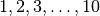

Frequently asked questions (FAQ)¶
Here are some frequently asked questions. If you have any additional question, please do not hesitate to write us  .
.
What are the main advantages of WaveDec and WaveDecActive?¶
WaveDec and WaveDecActive implement a rigorous approach to parameter estimation. The algorithm implements a maximum likelihood method using the measurements from all sensors and components jointly.
The estimated Rayleigh wave ellipticity angle is a valuable observable which –to the best of our knowledge– is not retrieved with any other software. See here for theory, see here for practical examples.
WaveDec also accounts for the simultaneous presence of multiple waves. This is important and improves the accuracy of the estimated parameters. See here for an example.
What are the limitations of WaveDec?¶
WaveDec has been tested extensively and retrieved successfully wave parameters in a variety of situations.
One important consideration is the assumption of planar wavefronts. As for many other array processing and beamforming methods, WaveDec models plane waves. This assumption requires the sources to be located far outside the array and an underlying 1-dimensional structural model.
For a given array, the planar wavefront model may be valid at certain frequencies (or wavelengths) and may not be valid at higher frequencies (or shorter wavelengths),
If you wish to model a source located close to the array or even within the array, you need to account for circular wavefronts and amplitude decay. WaveDecActive can do that, see User’s guide: WaveDecActive.
What are the limitations of WaveDecActive?¶
We believe that a good coupling of the sensors to the ground is critical for WaveDecActive. Since WaveDecActive models the three components jointly, it is important that both the vertical component and the horizontal components are properly coupled to the ground. This appears to be especially critical at high frequencies.
Why the analysed frequencies are not what I expected?¶
In the configuration file it is possible to specify the frequencies to process:
Fmin: 1 # Smallest frequency to analyse, in Hertz. Default is <10/Twindow> Fmax: 10 # Largest frequency to analyse, in Hertz. Default is <min(20, 0.5/Ts)> Fspacing: lin # Linear <lin> or logarithmic <log> frequency spacing. Default is <lin> Fnum: 11 # Number of frequencies, between Fmin and Fmax, to be analysed. # Default is <50>. Set Fnum: 0 to model all DFT frequencies.
Using the parameters shown above, one expects to process the frequencies  Hz. However, this may not be true and depends on the sampling time read in the input SAC files or specified by the optional parameter Ts.
WaveDec only processes discrete Fourier transform (DFT) frequencies (that is, the frequencies of fft()). WaveDec will analyse the DFT frequencies that are closest to what is specified by the user in the configuration file.
If you wish to have a dense and uniform frequency spacing, set Fnum: 0.